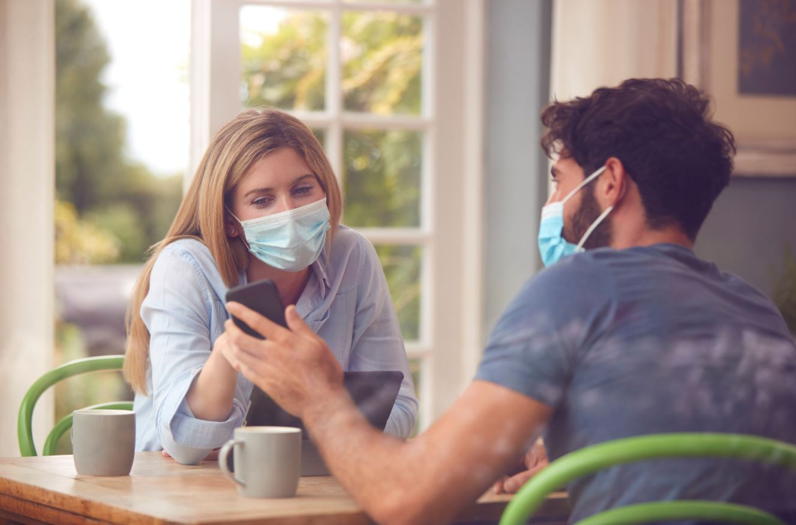

Todos sabem que o cuidado com o covid-19 é essencial para que nós possamos controlar o vírus, assim como, todos sabem que esse cuidado não estava sendo tomado por muitas pessoas, o que ao meu ver, foi um dos motivos para que a pandemia perdurasse por muito mais tempo do que devia.
Dito isso aqui estão práticas e hábitos que podem lhe ajudar a se cuidar e cuidar dos outros. Lembrando que a vacina é extremamente importante, e os itens listados são medidas extras que podem ser tomadas.
Limitar o contato próximo entre pessoas infectadas e outras pessoas é importante para reduzir as chances de transmissão do SARS-CoV-2. Principalmente durante a pandemia, devem ser adotados procedimentos que permitam reduzir a interação entre as pessoas com objetivo de diminuir a velocidade de transmissão do vírus.
Trata-se de uma estratégia importante quando há indivíduos já infectados, mas ainda assintomáticos ou oligossintomáticos, que não se sabem portadores da doença e não estão em isolamento.
Além disso, recomenda-se a manutenção de uma distância física mínima de pelo menos 1 metro de outras pessoas, especialmente daquelas com sintomas respiratórios e um grande número de pessoas (aglomerações) tanto ao ar livre quanto em ambientes fechados.
Garantir uma boa ventilação em ambientes internos também é uma medida importante para prevenir a transmissão em ambientes coletivos. Segundo o CDC19 e a OMS20, aglomerações representam um risco alto para disseminação do SARSCoV-2. Para isso, considera-se o aglomerado de várias pessoas num mesmo local, onde se torna difícil para as pessoas permanecerem a pelo menos um metro de distância entre elas.
Quanto mais pessoas interagem durante este tipo de evento e quanto mais tempo essa interação durar, maior o risco potencial de infecção e disseminação do vírus SARS-CoV-2. Lugares ou ambientes que favorecem a aglomeração de pessoas devem ser evitados durante a pandemia.
A higienização das mãos é a medida isolada mais efetiva na redução da disseminação de doenças de transmissão respiratória. As evidências atuais indicam que o vírus causador da covid-19 é transmitido por meio de gotículas respiratórias ou por contato. A transmissão por contato ocorre quando as mãos contaminadas tocam a mucosa da boca, do nariz ou dos olhos.
O vírus também pode ser transferido de uma superfície para outra por meio das mãos contaminadas, o que facilita a transmissão por contato indireto. Consequentemente, a higienização das mãos é extremamente importante para evitar a disseminação do vírus causador da covid-19. Ela também interrompe a transmissão de outros vírus e bactérias que causam resfriado comum, gripe e pneumonia, reduzindo assim o impacto geral da doença.
O vírus também pode ser transferido de uma superfície para outra por meio das mãos contaminadas, o que facilita a transmissão por contato indireto. Consequentemente, a higienização das mãos é extremamente importante para evitar a disseminação do vírus causador da covid-19. Ela também interrompe a transmissão de outros vírus e bactérias que causam resfriado comum, gripe e pneumonia, reduzindo assim o impacto geral da doença.
A etiqueta respiratória consiste nas seguintes ações:
O uso universal de máscaras em serviços de saúde deve ser uma exigência para todos os trabalhadores da saúde e por qualquer pessoa dentro de unidades de saúde, independente das atividades realizadas. Todos os trabalhadores da saúde e cuidadores que atuam em áreas clínicas devem utilizar máscaras cirúrgicas de modo contínuo durante toda a atividade de rotina.
Em locais de assistência a pacientes com covid-19 em que são realizados procedimentos geradores de aerossóis, recomenda-se que os profissionais da saúde usem máscaras de proteção respiratória (padrão N95 ou PFF2 ou PFF3, ou equivalente), bem como demais equipamentos de proteção individual.
O uso de máscara facial, incluindo as de tecido, é fortemente recomendado para toda a população em ambientes coletivos, em especial no transporte público e em eventos e reuniões, como forma de proteção individual, reduzindo o risco potencial de exposição do vírus especialmente de indivíduos assintomáticos.
As máscaras não devem ser usadas por crianças menores de 2 anos ou pessoas que tenham dificuldade para respirar, estejam inconscientes, incapacitadas ou que tenham dificuldade de remover a máscara sem ajuda. Recomenda-se lavar as mãos antes de colocar a máscara, colocando-a sobre o nariz e a boca, prendendo-a sob o queixo.
A pessoa deve ajustar a máscara confortavelmente pelas laterais do rosto, e certificar-se que consegue respirar normalmente. As máscaras não devem ser colocadas em volta do pescoço ou na testa, e ao tocá-la, deve-se lavar as mãos com água e sabão ou álcool em gel 70% para desinfecção. Para pessoas sintomáticas recomenda-se o uso de máscaras cirúrgicas como controle da fonte.
